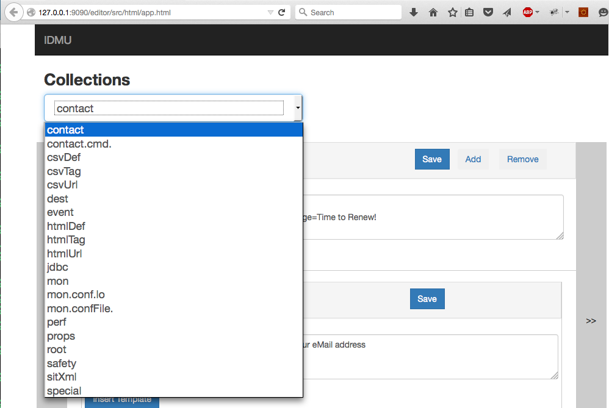
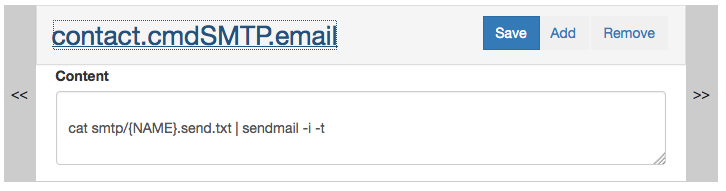
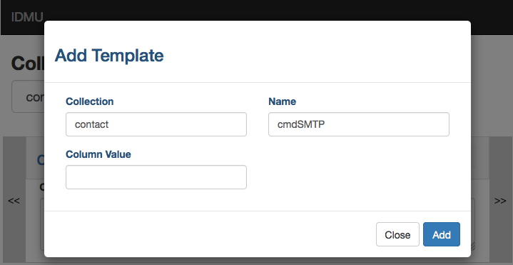
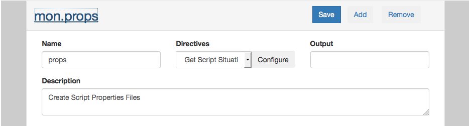
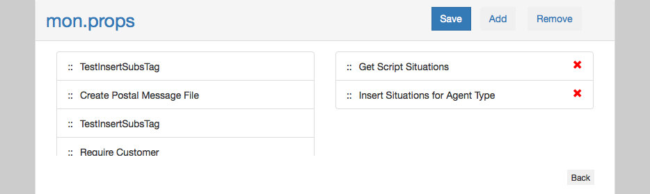
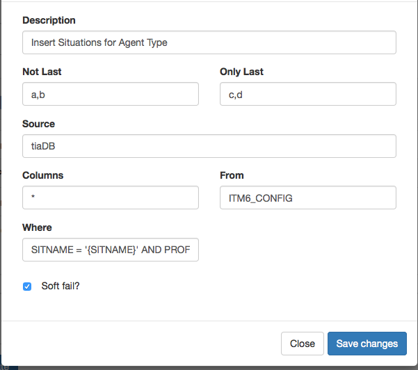
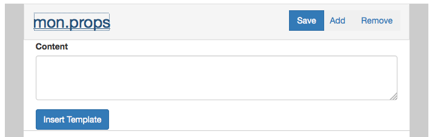
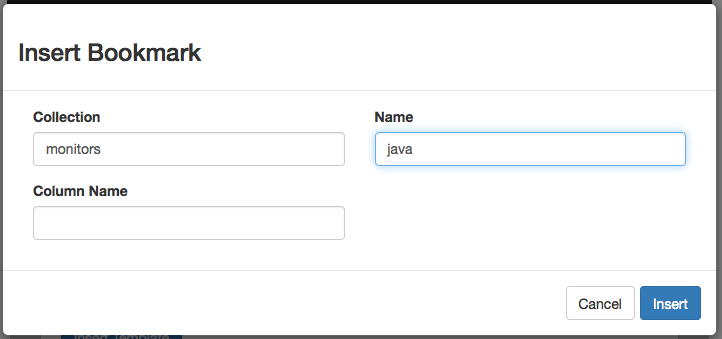

Copyright
2015, 2015 IBM
Licensed under the Apache License, Version 2.0 (the "License"); you may not use this file except in compliance with the License. You may obtain a copy of the License at http://www.apache.org/licenses/LICENSE-2.0. Unless required by applicable law or agreed to in writing, software distributed under the License is distributed on an "AS IS" BASIS, WITHOUT WARRANTIES OR CONDITIONS OF ANY KIND, either express or implied. See the License for the specific language governing permissions and limitations under the License.
The IBM Data Merge Utility is accessed via the Merge Servlet which can be accessed at http://yourServer/merge Parameters passed on the http request are used to initilize the Replace Hash. The Template full name can be provided in the DragonFlyFullName parameter.
The URL: http://www.yourserver.com/merge?DragonFlyFullName=system.default.
will merge the system default template. Note that the trailing period is required.
The most fundamental function of the merge process is the replacement of merge tags with data values. The replace "From" values are wrapped in {brackets} and processed globally during the merge process. These replace values are processed as a hash, which implies that adding a duplicate "From" value willreplace the "To" value of the existing hash entry with the new value.
Many Directive Options (SQL Statements, Output Filenames, etc.) are processed by the Template Replace Hash before being used during the merge. Options that are processed by the Replace Hash are listed in the documents with this special mark-up.
The most fundamental function of the merge process is the replacement of merge tags with data values. The replace "From" values are wrapped in {brackets} and processed globally during the merge process. These replace values are processed as a hash, which implies that adding a duplicate "From" value willreplace the "To" value of the existing hash entry with the new value.
Many Directive Options (SQL Statements, Output Filenames, etc.) are processed by the Template Replace Hash before being used during the merge. Options that are processed by the Replace Hash are listed in the documents with this special mark-up.
The most fundamental function of the merge process is the replacement of merge tags with data values. The replace "From" values are wrapped in {brackets} and processed globally during the merge process. These replace values are processed as a hash, which implies that adding a duplicate "From" value willreplace the "To" value of the existing hash entry with the new value.
Many Directive Options (SQL Statements, Output Filenames, etc.) are processed by the Template Replace Hash before being used during the merge. Options that are processed by the Replace Hash are listed in the documents with this special mark-up.
The insertion of sub-templates into a target template is the second core feature of the Merge Utility. The Insert Rows directives work with a potentially multi-row data set, and sub-templates are inserted into the target template, at bookmarks for each row of the result set. Bookmarks take the following form
<tkBookmark name="SomeSubTemplate" collection="FromCollection" column="byColumn""/>
The collection and name attributes of the bookmark identify the sub-template to insert. The column attribute if present will insert different sub-templates based on the value in the Column specified here. A template can have multiple bookmarks to insert multiple sub-templates for each row of the result set.
The following directives will insert sub-templates
Varying the Sub-Template Inserted
When inserting sub-templates, you can vary the sub-template being inserted based on data in the result set. This is often based on a "Type" field in the result set, and relies on a "Collection" of templates with the same name and a specified column value. If a template for the current column value is not found, the "empty" value is used. If no "empty" value exists for the collection the merge will fail with a "Template Not Found" exception.
The Insert Subtemplate directives have the following Options
- Not Last Tags - Tags that should be empty on the last insertion row
- Only Last Tags - Tags that should be empty on all except the last insertion row
When inserting sub-templates various syntax rules often require that the list separator be different than the list terminator. For example a comma separated list terminated with a period. This can be supported in templates by using static replace tags for the separator/terminator, and then identifying those tags in the "Not Last" and "Only Last" fields of the Insert Directive. Tags identified as "Not Last" are replaced with an empty value on the Last Row of the insert. Tags identified as "Only Last" are replaced with an empty value on all except the last row of the insert.
Any sub-template can be saved as an output file instead of being inserted into the target template, by providing an output file name for the Template. All output files generated in this manner during a merge are added to an archive, and placed in the merge output directory which is specified in the web.xml configuration file.
The archive name is provided in the replace tag {DragonFlyeOutputFile} and a GUID is generated for the file name if needed. If you pass DragonFlyOutputFile as a parameter to the merge you should ensure that the file name provided is unique for the duration of the merge operation. Database connections are cached based on this value, and multiple concurrent merges with the same DragonFlyOutputFile name will have unpredictable results.
The following are reserved Replace Tags, that have various effects / meanings:
- DragonFlyCacheReset - The Data Merge Tool will cache all templates, allowing for very fast response
times and high throughput rates. Adding the parameter DragonFlyCacheReset with or without a value will
clear the template cache before executing the merge. This value is not placed on the Replace Hash
- DragonFlySoftFail - If the value {DragonFlySoftFail} is in the replace stack, merge errors are written
as output into the template, rather than throwing exceptions back to a full merge failure.
This can be helpful in debugging problems with nested replace values or invalid sql result sets.
- DragonFlyReplaceValues - The replace tag {DragonFlyReplaceValues} will be replaced with a full
dump of the replace hash, with the From values mangled as {-from} in place of {from}.
This tag can be useful when designing and debugging templates.
- DragonFlyOutputFile - The replace tag {DragonFlyOutputFile} will contain a generated GUID.zip or GUID.tar.gz string.
This is the file name of any additional generated output, and can frequently be used in a javascript
tag to initiate a download. NOTE: This value can be provided as an input parameter, however database
connection caching is associated with the guid during merge execution, so multiple concurrent merges
with the same {DragonFlyOutputFile} value will have unpredictable results. If provided on the replace
stack, you should ensure that this value is unique for the duration of the merge execution.
- DragonFlyOutputHash - The replace tag {DragonFlyOutputHash}
will contain a list of the files generated in the output archive along with their md5 checksum values.
- DragonFlyOutputType - output archives are generated as .tar
files by default. You can generate .zip files by specifying DragonFlyOutputType=zip
- DragonFlyTemplateStack - This will print out a / separated list of the current template full-names.
This can be useful when developing and debugging templates.
The Template Editor
The template editor can be accessed at http://yourServer:port/editor/src/html/app.html
A collection is a container for organizing templates. You can create multiple containers that have one or many templates assigned to them.
To access collections, perform the following steps:
1. Navigate to the IDMU application in your browser.
2. Select a collection from the 'Collections' select list.
3. Upon selection of a collection, all the IDMU will display all the available templates in the collection.
4. You may navigate between the templates by clicking on the Left/Right bars in the template editor.
Figure #1 - Collection Page

Figure #2 Navigating Between Templates Using Left and Right Arrows

The template is the core component of the IDMU Template editor. A template provides the ability to create a message, define merge fields, specify directives to drive the retrevial of data, and perform the required inserts of that data. Once the IDMU processes the template, the IDMU can deliver multiple output files from a single merge into a zip or tar archive.
Perform the following steps to create a template:
1. Click on the 'Add' button in the title bar of a template.
2. Upon clicking, the IDMU will launch a dialog box will enabling you to enter the collection, name of template, and columnValue if any.
3. Upon completion of these fields, click on the 'Add' button on the dialog. This will create the new template.
Figure #3 - Creating a new template

You can save a template in any collection. Perform the following steps to save a template:
1. Navigate to the collection and template of interest within that collection.
2. Click on the 'Save' button on the top right of the title bar of the template.
Figure #4 - Saving a template
You can edit the basic template properties like name, output, and description. Perform the following steps to edit template properties:
1. Click on the title of the template from within the collection.
2. The template expand the area and show the basic properties of the template.
3. After making changes, click on the "Save" button of the template.
Figure #5 - Edit template properties

You can add or remove templates in any collection. Perform the following steps to remove a template:
1. Navigate to the collection and template of interest within that collection.
2. Click on the 'Remove' button on the top right of the title bar of the template.
Figure #6 - Removing a template
The IDMU template editor provides multiple merge directives. For a list of available merge directives, click here [link needed]. Once you have identified the merge directive(s) you want to use, perform the following steps:
1. Locate the template you wish to edit.
2. Click on the title of the template, expanding it.
3. Click on the 'Configure' button next to the directives "Select" list. Upon clicking, the IDMU launches the drag and drop directives panel.
4. You can drag the merge directives from the left hand side list onto the right and side. This action will add the selected directive to the template.
5. In addition to the drag and drop of the directives, you can also rearrage the order of the directives.
6. To remove a directive from the template click on the 'red' X button to the right of the merge directive.
*Note* - After adding or changing directives and/or it's properties you must hit the 'Back'
button on this panel, and then press the 'Save' button on the title bar. Otherwise your
changes will not be saved.
Figure #7 - Dragging merge directives

Once you have selected the merge directives for your template, you can edit them to configure the specific data provider information.
To change the properties of a configured template directive, perform the following:
1. Navigate to the directive configuration panel.
2. Click on the directive on the lefthand side of the drag and drop list.
3. Upon clicking, the IDMY will launch the property editor for that particular directive type.
4. Make your edits (for example, update a "WHERE" clause) and press the 'Save' button on the dialog editor.
5. As noted earlier, click the 'Back' button.
6. To complete the edit, click on the "Save" button for the template.
Figure #8 - Editing merge directives

The IDMU allows you to insert sub-templates into templates. The "Insert Subs" directive works with a "Bookmark" to create, process, and insert a sub-template. The IDMU inserts one sub-template for each row of data returned by the data provider specified in the "Insert Subs" directive. From there, the sub-template inherits the full Replace Hash of its parent template, as well as the replace row values of the current record that is driving the insert. Sub-templates can additionally have their own directives to drive additional processing within their own template.
To insert a sub-template you must have configured the template, perform the following:
1. Ensure you have dragged an 'Insert' directive to the left of the template. You will know the "Insert" directive is available because you will see an 'Insert Template' button will appear below the 'Content' area.
2. After clicking on the 'Insert Template' button, the IDMU will present a dialog to create the collection, template name, and column name (optional) for the sub-template.
3. Additionally, when you click on the 'Insert' button, a the IDMU inserts a new bookmark into the content. The IDMU will then refresh the template screen with the new bookmark, expanding it as a sub-template.
Figure #9 - Creating the sub-template

Figure #10 - Creating the bookmark

In the following table Providers are in blue and ProvidersHttp are in green:
| Directives |
Null |
Tag |
Sql |
Csv |
Html |
| Require |
|
|
|
|
|
| Replace Value |
|
|
|
|
|
| InsertSubs |
|
|
|
|
|
| ReplaceRow |
|
|
|
|
|
| ReplaceCol |
|
|
|
|
|
| ReplaceMarkup |
|
|
|
|
|
The require directive specifies a comma separated list of tags that should exist in the replace hash. If a required tag is missing the merge process will fail with an exception. If the soft fail indicator is present, the missing values message will be inserted into the template.
The Require directive has the following Options
- Tags - The comma separated list of requried Tags
The Replace Value directive provides for a simple static from/to value pair. The from value is added as-is to the replace stack. This directive is frequently used in conjunction with the Not-Last and Only-Last options of the Insert Rows directives.
For a more flexable way to place static values on the Replace Hash see the Replace from Csv Directives
The Insert Sub-Templates If directive combines the functionality of the
Insert Sub-Templates with the
Tag data provider.
The Insert Sub-Templates from SQL directive combines the functionality of the
Insert Sub-Templates with the
SQL data provider.
The Replace Row from SQL directive combines the functionality of
Replace Row with the
SQL data provider.
The Replace Column from SQL directive combines the functionality of
Replace Col with the
SQL data provider.
The Insert Sub-Templates from CSV directive combines the functionality of the
Insert Sub-Templates with the
CSV data provider.
The Replace Row from CSV directive combines the functionality of
Replace Row with the
CSV data provider.
The Replace Column from CSV directive combines the functionality of
Replace Col with the
CSV data provider.
The Insert Sub-Templates from HTML directive combines the functionality of the
Insert Sub-Templates with the
HTML data provider.
The Replace Row from HTML directive combines the functionality of
Replace Row with the
HTML data provider.
The Replace Column from HTML directive combines the functionality of
Replace Col with the
HTML data provider.
The Replace Column from HTML directive uses the HTML data provider.
to fetch an HTML document, and then find Replace From/To values based on the following options:
By way of example, the following options:
- Element Selector - Input
- From Attribute - ID
- To Attribute - Empty (content of the selected element)
With this HTML Data
will produce the following replace hash
The SQL (JDBC) Data Providers utilize a JDBC data source configured in the IDMU J2EE Context.xml file, and create a SQL SELECT statement based on the options provided. The components of the select statement are each processed by the Replace Hash before being executed.
JDBC Directives
CSV Data Providers fetch their information from either a URL, the data associated with a Replace Tag, or as static data from the directive itself. Once fetched the data is parsed based on the Microsoft Excel CSV formatting standards.
CSV Directives
HTML Data Providers fetch their information from either a URL, the data associated with a Replace Tag, or as static data from the directive itself. Once fetched the data is parsed as HTML, and the HTML <table> elements are selected based on the css selector option and parsed for use. Note that all HTML table elements must specify a table row with table header values. If multiple tables match the selector, they are each parsed and processed in the order they are found in the HTML source.
HTML Directives
Tag Data providers utilize data from the Replace Hash (to support the Insert From Tags directive). If the Tag exists and meets the Condition parameter a data table is constructed with a single column that has the Tag Name. If the "Is List" indicator is set, the tag data is treated as a comma seperated list of values and the data table has multiple rows, one for each value. If the "Is List" indicator is not set the data table will have only a single row.
Tag Data Directives
The Tag Data provider is used to select data that exists in the Replace Hash to use for Directive Processing